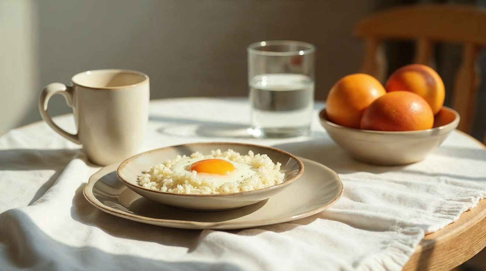

이종호 한의사 감수좋은꿈참사랑한의원 대표원장 (한의사 면허번호 19769)발행 2026-11-26 · 수정 2026-11-26
이 글의 차례
밤 열한 시, 독서실에서 돌아온 아이가 가방을 내려놓자마자 소파에 쓰러집니다. 씻으라는 말에 대답도 하지 못하고 눈을 감습니다. 아침에는 알람을 몇 번이나 끄고 겨우 일어나고, 수업 시간에는 같은 문장을 세 번째 읽고 있는 자신을 발견한다고 합니다. "나 머리가 나빠진 것 같아." 아이의 이 말이 오래 마음에 남습니다.
수험생 상담에서 가장 많이 듣는 고민이 바로 이것입니다. 공부할 시간은 늘었는데 집중은 짧아지고, 몸은 늘 무겁고, 주말에 몰아서 자도 개운하지 않다는 이야기입니다. 보호자는 보약이라도 먹여야 하나 고민하고, 아이는 의지가 약해서 그렇다고 자책합니다.
그런데 집중력은 의지만으로 만들어지는 것이 아닙니다. 잠과 식사, 움직임, 긴장의 정도가 매일 조금씩 쌓여서 그날의 집중력이 됩니다. 어느 한 곳이 무너지면 다른 곳도 따라 흔들립니다. 그래서 진료실에서는 공부 시간보다 먼저 하루가 어떻게 흘러가는지를 여쭙니다.
이 글에서는 수험생의 체력과 집중력을 흔드는 요인을 차례로 살펴보고, 집에서 해 볼 수 있는 점검과 한의원에서 함께 살피는 부분을 정리해 보겠습니다. 중고등학생뿐 아니라 시험을 준비하는 어른 수험생에게도 같은 이야기가 해당됩니다.
수험생의 피로와 집중력 저하는 어떤 모습인가요
수험생이 호소하는 불편은 대개 몇 가지가 함께 묶여 나타납니다. 한두 가지만 있으면 바쁜 시기의 흔한 피로일 수 있지만, 여러 가지가 몇 주씩 겹쳐 있다면 하루의 흐름을 다시 점검해 볼 때입니다.
- 아침에 일어나기 몹시 힘들고, 일어나도 한참 멍하다
- 오후만 되면 머리가 띵하고 졸음이 쏟아진다
- 같은 문장을 여러 번 읽어도 머리에 들어오지 않는다
- 목과 어깨가 늘 뻐근하고 눈이 쉽게 피로하다
- 소화가 잘 되지 않고 입맛이 들쭉날쭉하다
- 사소한 일에 예민해지고 짜증이 늘었다
- 주말에 몰아서 자도 개운하지 않다
왜 공부할수록 더 지치게 될까요
가장 큰 이유는 잠입니다. 공부 시간을 늘리려고 잠을 줄이면, 낮 동안 머리에 들어온 것을 정리하고 저장하는 시간이 함께 줄어듭니다. 늦게까지 버틴 만큼 다음 날 집중이 흐려지고, 흐려진 집중을 메우려고 또 늦게 자는 고리가 만들어집니다.
두 번째는 식사의 흐름입니다. 아침을 거르고, 점심은 급하게 먹고, 저녁은 학원 사이에 편의점 음식으로 때우는 날이 많습니다. 혈당이 크게 오르내리면 식후에 졸음이 쏟아지고, 두어 시간 뒤에는 기운이 빠지며 집중이 끊깁니다.
세 번째는 움직임 부족입니다. 하루 대부분을 앉아서 보내면 다리 근육이 피를 위로 올려 보내는 힘이 약해지고, 목과 어깨가 굳으면서 머리가 무거워집니다. 운동할 시간이 아깝다고 느끼기 쉽지만, 몸이 굳을수록 앉아 있는 시간의 질은 떨어집니다.
여기에 눈의 피로가 더해집니다. 책과 화면을 가까이에서 오래 보면 눈 주위 근육이 쉴 틈 없이 긴장하고, 그 긴장이 이마와 관자놀이, 뒷목까지 이어집니다. 오후의 두통과 멍함 가운데 상당 부분이 눈과 목에서 시작되는 경우가 많습니다. 한 시간에 한 번은 창밖 먼 곳을 20초쯤 바라보며 눈의 초점을 풀어 주세요.
네 번째는 긴장입니다. 성적과 진로에 대한 걱정이 마음 한쪽에 늘 켜져 있으면, 몸은 쉬는 시간에도 완전히 풀리지 못합니다. 잠이 얕아지고 소화가 더디어지며, 작은 소리에도 집중이 깨집니다.
긴장은 숨에서도 드러납니다. 문제를 풀 때 자기도 모르게 숨을 참거나 얕게 쉬는 아이가 많습니다. 한 과목을 마칠 때마다 의자에 등을 기대고 내쉬는 숨을 길게 세 번만 쉬어 보게 하세요. 어깨에 들어간 힘이 빠지면서 다음 과목으로 넘어가는 머리가 한결 가벼워집니다.
한의학에서는 오래 머리를 쓰고 걱정이 많으면 비위의 기운이 상해 소화가 약해지고, 그 결과 기혈이 부족해져 쉽게 지치고 기억이 흐려진다고 설명합니다. 반대로 긴장으로 열이 위로 몰리면 얼굴이 달아오르고 잠이 얕아지며 마음이 조급해지는 모습으로 나타나기도 합니다.
카페인과 에너지 음료는 어떻게 쓰면 좋을까요
졸음을 쫓으려고 커피와 에너지 음료를 찾는 수험생이 많습니다. 잠깐 정신이 드는 것은 사실이지만, 오후 늦게 마신 카페인은 밤잠을 얕게 만들고, 그 결과 다음 날 더 많은 카페인이 필요해지는 고리를 만들기 쉽습니다.
카페인에 예민한 청소년은 적은 양에도 가슴이 두근거리고 손이 떨리며 불안이 커질 수 있습니다. 마신다면 오전에 한 잔 정도로 정하고, 오후 두세 시 이후에는 피하도록 권합니다. 에너지 음료는 카페인 양이 많고 당도 높아서, 가능하면 습관이 되지 않게 해 주세요.
졸음이 쏟아질 때는 카페인보다 먼저 자리에서 일어나 5분 걷기, 찬물로 손과 얼굴 씻기, 창문을 열어 바깥 공기 마시기를 해 보세요. 그래도 졸리면 15~20분 정도의 짧은 낮잠이 오후의 집중을 되살리는 데 도움이 되는 경우가 많습니다.
다른 원인은 없는지 먼저 봅니다
피로와 집중력 저하가 생활의 문제만은 아닐 수 있습니다. 아래 모습이 함께 있다면 먼저 병원에서 확인을 받아 보시는 것이 좋습니다.
- 얼굴이 창백하고 계단을 오를 때 숨이 차다: 빈혈을 확인해 봅니다.
- 추위를 많이 타고 체중이 늘며 피부가 건조하다: 갑상선 기능을 확인해 봅니다.
- 코를 심하게 골고 자다가 숨이 멎는 것 같다: 수면 중 호흡 문제를 확인해 봅니다.
- 기분이 2주 넘게 가라앉고 흥미가 사라졌다: 우울을 함께 살펴봅니다.
- 어릴 때부터 산만함과 충동성이 두드러졌다: 주의력 문제를 전문 진료과와 상의해 봅니다.
이런 확인을 거친 뒤에도 뚜렷한 이유가 없다면, 그때부터 생활의 흐름과 몸의 상태를 함께 조정하는 쪽으로 이야기를 이어 갑니다.
스스로 점검해 보세요
지난 일주일을 떠올리며 체크해 보세요. 체크가 많을수록 공부 방법보다 생활의 바탕을 먼저 다지는 것이 순서입니다.
- 평일 잠이 여섯 시간이 안 되는 날이 많다
- 주말에 평일보다 세 시간 넘게 늦게 일어난다
- 아침을 거르는 날이 일주일에 세 번 넘는다
- 오후 세 시 이후에도 커피나 에너지 음료를 마신다
- 하루에 30분 이상 걷는 날이 거의 없다
- 잠들기 직전까지 휴대폰을 본다
- 한 번 앉으면 두 시간 넘게 일어나지 않는다
먼저 이렇게 여쭙니다
처음 오시면 대략 이런 순서로 여쭙니다. 아이 혼자 오는 경우에도 같은 질문으로 시작합니다.
- 언제부터 지치고 집중이 어렵다고 느꼈나요?
- 하루 일정은 어떻게 흘러가나요? 학교, 학원, 독서실 시간을 함께 알려 주세요.
- 잠드는 시각과 깨는 시각, 주말은 어떻게 다른가요?
- 하루 끼니와 간식, 카페인은 어떻게 드시나요?
- 소화, 대변, 두통, 목·어깨 뻐근함은 어떤가요?
- 여학생이라면 생리 양과 주기는 어떤가요?
- 먹고 있는 약이나 영양제가 있나요?
공부 계획표가 있다면 함께 가져와 주셔도 좋습니다. 계획표를 보며 쉬는 시간이 어디에 들어가 있는지, 잠이 어디서 깎이고 있는지를 함께 찾아보면 바꿀 자리가 눈에 들어옵니다.
일상에서 먼저 해 볼 수 있는 것
공부 시간을 더 늘리기보다, 같은 시간을 더 맑은 머리로 보내는 쪽을 먼저 찾아보세요. 아래에서 두세 가지를 골라 2주 정도 이어 가면 하루의 무게가 조금씩 달라지는 것을 느낄 수 있습니다.
- 잠드는 시각을 정하고 평일·주말 차이를 두 시간 안쪽으로 맞추기
- 아침은 가볍게라도 먹기: 밥 반 공기와 달걀, 우유와 바나나처럼
- 50분 공부하고 5~10분은 자리에서 일어나 걷거나 스트레칭하기
- 저녁은 학원 가기 전 든든하게, 밤늦은 야식은 줄이기
- 하루 20~30분은 햇빛 아래에서 걷기, 등하굣길 한 정거장 걷기도 좋습니다
- 잠들기 30분 전에는 휴대폰을 책상 밖에 두기
간식은 단 과자와 음료보다 견과류 한 줌, 삶은 달걀, 요거트, 과일처럼 혈당을 천천히 올리는 것을 권합니다. 책상 위에 물병을 두고 한 과목이 끝날 때마다 몇 모금씩 마시는 습관을 들여 보세요. 목이 마르다고 느낄 때는 이미 몸이 조금 지친 상태입니다.
목과 어깨가 굳는다면 한 시간에 한 번 어깨를 크게 돌리고, 턱을 뒤로 살짝 당겨 목 뒤를 늘여 주세요. 책상과 의자 높이를 맞추고 화면이나 책을 눈높이에 가깝게 올리면 목에 실리는 무게가 줄어듭니다.

시험이 가까워질수록 무엇을 지켜야 할까요
시험이 다가오면 마음이 급해져 잠을 줄이고 싶어집니다. 그러나 시험 직전 몇 주는 새로 많이 넣는 시간이라기보다, 이미 들어온 것을 꺼내 쓰는 연습을 하는 시간입니다. 이때 잠이 무너지면 알던 것도 떠오르지 않습니다.
시험 4주 전부터는 시험 시간에 맞춰 일어나고 아침을 먹는 연습을 시작해 보세요. 실제 시험 시간대에 머리가 가장 맑도록 몸의 시계를 맞추는 것입니다. 새로운 보약이나 영양제를 시험 직전에 처음 시작하는 것은 피하시는 편이 좋습니다. 몸에 맞는지 확인할 시간이 부족하기 때문입니다.
보호자는 어떻게 곁에 있으면 좋을까요
수험생 곁의 보호자는 무엇을 더 해 줄 수 있을까 늘 고민합니다. 그런데 아이에게 가장 힘이 되는 것은 특별한 음식이나 영양제보다, 집이 편하게 쉴 수 있는 곳이라는 느낌인 경우가 많습니다.
성적 이야기는 아이가 먼저 꺼낼 때 들어 주시고, 식탁에서는 공부와 상관없는 가벼운 이야기를 나눠 보세요. 늦게 돌아온 아이에게 따뜻한 국 한 그릇을 건네며 "오늘도 수고했어"라고 말해 주는 것만으로도 긴장이 한결 풀립니다.
아이의 잠을 지켜 주는 것도 보호자의 몫입니다. 집안의 불을 조금 일찍 낮추고, 가족 모두 늦은 밤 텔레비전 소리를 줄여 주시면 아이가 잠자리에 드는 시각을 앞당기기 쉬워집니다.
한의원에서 함께 살필 수 있는 경우
- 잠은 자는데도 늘 피곤하고 오후마다 머리가 무거운 경우
- 소화가 약하고 입맛이 없어 끼니를 자주 거르는 경우
- 긴장하면 가슴이 두근거리고 잠이 얕아지는 경우
- 목과 어깨가 굳어 두통과 눈 피로가 함께 오는 경우
- 손발이 차고 쉽게 지치며 감기에 자주 걸리는 경우
좋은꿈참사랑한의원에서는 진찰을 먼저 하고, 그 결과에 따라 생활 리듬 조정과 함께 침, 추나, 한약 상담 가운데 지금 상태에 맞는 것을 고릅니다. 한약을 상의할 때는 먹고 있는 약과 영양제를 모두 확인하고, 청소년이라면 보호자와 함께 신중하게 정합니다.
다른 병원에서 처방받은 약이 있다면 그대로 이어 가시면 됩니다. 한의원 진료 때문에 약을 멈추지 않으며, 필요하면 처방한 선생님과 상의하시도록 안내해 드립니다.
이렇게 기록해 오시면 상담이 쉬워집니다
일주일만 간단히 적어 보세요. 공부 기록처럼 거창할 필요는 없습니다. 휴대폰 메모에 한 줄씩이면 충분합니다.
- 잠든 시각과 깬 시각
- 아침 식사 여부와 카페인 양, 마신 시각
- 집중이 잘된 시간대와 졸음이 쏟아진 시간대
- 하루 걸은 시간
- 두통, 소화불량, 목·어깨 뻐근함
- 그날의 기분 점수(0~10)
기록을 나란히 놓고 보면 잠이 짧았던 다음 날, 아침을 거른 날, 커피를 늦게 마신 날과 집중이 흐려진 날이 겹치는 것이 보이기 시작합니다. 그 겹치는 자리가 바로 먼저 손볼 곳입니다. 한꺼번에 다 고치려 하지 말고, 가장 자주 겹치는 한 가지부터 바꿔 보세요.
긴 레이스를 끝까지 달리려면
수험 생활은 단거리가 아니라 긴 레이스입니다. 처음 몇 주 무리해서 달리면 막판에 힘이 빠지기 쉽습니다. 잠과 식사, 움직임이라는 바탕을 지키는 것이 결국 끝까지 집중을 이어 가는 길입니다.
이번 주에는 잠드는 시각 하나와 아침 한 끼, 이 두 가지부터 정해 보세요. 다음에 오시면 일주일 기록을 함께 펼쳐 보며 다음 걸음을 정하겠습니다.
이런 증상은 먼저 확인이 필요합니다
- 공부하다 갑자기 쓰러지거나, 가슴 통증과 심한 숨참이 함께 오는 경우
- 몇 주 사이 체중이 크게 빠지면서 물을 많이 마시고 소변이 부쩍 잦아진 경우
이런 신호가 있으면 한의원보다 가까운 병원이나 응급실을 먼저 찾으세요.
함께 읽으면 좋은 글
- 오후만 되면 머리가 띵하고 집중이 떨어지는 수험생은 무엇을 살피나요?
- 커피와 에너지 음료로 버티다 밤에 잠이 안 올 때는 어떻게 하나요?
- 시험 4주 전에는 잠과 식사 리듬을 어떻게 점검하면 되나요?
- 충분히 쉬어도 몸이 늘 피곤한 만성피로는 어떤 점을 살펴보나요?
- 수험생 상담에서는 어떤 이야기를 나누나요?

여쭙는 것
- 언제부터 지치고 집중이 어렵다고 느꼈나요?
- 하루 일정은 어떻게 흘러가나요? 학교, 학원, 독서실 시간을 함께 알려 주세요.
- 잠드는 시각과 깨는 시각, 주말은 어떻게 다른가요?
생활에서 해 볼 것
- 잠드는 시각을 정하고 평일·주말 차이를 두 시간 안쪽으로 맞추기
- 아침은 가볍게라도 먹기: 밥 반 공기와 달걀, 우유와 바나나처럼
- 50분 공부하고 5~10분은 자리에서 일어나 걷거나 스트레칭하기
한의원에서 함께 살필 것
- 잠은 자는데도 늘 피곤하고 오후마다 머리가 무거운 경우
- 소화가 약하고 입맛이 없어 끼니를 자주 거르는 경우
- 긴장하면 가슴이 두근거리고 잠이 얕아지는 경우
먼저 확인이 필요한 신호
- 공부하다 갑자기 쓰러지거나, 가슴 통증과 심한 숨참이 함께 오는 경우
- 몇 주 사이 체중이 크게 빠지면서 물을 많이 마시고 소변이 부쩍 잦아진 경우
한눈에 보는 표
| 구분 | 핵심 |
|---|---|
| 여쭙는 것 | 언제부터 지치고 집중이 어렵다고 느꼈나요? 하루 일정은 어떻게 흘러가나요? 학교, 학원, 독서실 시간을 함께 알려 주세요. |
| 생활에서 해 볼 것 | 잠드는 시각을 정하고 평일·주말 차이를 두 시간 안쪽으로 맞추기 아침은 가볍게라도 먹기: 밥 반 공기와 달걀, 우유와 바나나처럼 |
| 한의원에서 함께 살필 것 | 잠은 자는데도 늘 피곤하고 오후마다 머리가 무거운 경우 소화가 약하고 입맛이 없어 끼니를 자주 거르는 경우 |
| 먼저 확인이 필요한 신호 | 공부하다 갑자기 쓰러지거나, 가슴 통증과 심한 숨참이 함께 오는 경우 몇 주 사이 체중이 크게 빠지면서 물을 많이 마시고 소변이 부쩍 잦아진 경우 |
자주 묻는 질문
수험생에게 보약이 꼭 필요한가요?
모든 수험생에게 필요한 것은 아닙니다. 진찰해 보고 잠과 식사, 움직임을 먼저 조정하는 것으로 충분해 보이면 그쪽을 권합니다. 한약이 도움이 될 수 있다고 판단되면 먹고 있는 약을 확인하고 보호자와 상의해 신중하게 정합니다.
잠을 줄이고 공부 시간을 늘리면 안 되나요?
잠이 줄면 낮에 공부한 것을 정리하는 시간이 함께 줄고 다음 날 집중이 흐려지기 쉽습니다. 같은 시간을 더 맑은 머리로 보내는 쪽이 길게 보면 남는 것이 많습니다.
집중력에 좋은 음식이 따로 있나요?
한 가지 음식보다 끼니를 거르지 않고 혈당을 천천히 올리는 식사를 꾸준히 하는 것이 중요합니다. 아침 한 끼와 단백질이 들어간 간식부터 챙겨 보세요.
시험 직전에 한의원 진료를 시작해도 되나요?
침이나 생활 조정은 시험 직전에도 상의할 수 있습니다. 다만 새 한약이나 영양제는 몸에 맞는지 확인할 시간이 필요해서, 가능하면 시험보다 넉넉히 앞서 시작하시길 권합니다.
어른 수험생도 같은 방법이 해당되나요?
네, 바탕은 같습니다. 직장과 공부를 함께하는 분이라면 출퇴근 시간과 식사 시간을 함께 살펴 무리가 덜한 리듬을 찾아봅니다.
좋은꿈참사랑한의원은 재진 때 지난번 이야기부터 이어서 여쭙니다. 진료시간과 예약은 오시는 길에서 확인하세요.
어디서 상담받을 수 있나요?
좋은꿈참사랑한의원은 서울 동작구 만양로2길 2 신성빌딩 3층·5층(서울 동작구 상도동, 7호선 상도역 3번 출구 근처)에 있습니다. 한의사 3명(이종호 대표원장, 조영기 수석진료원장, 정원영 진료원장)이 진료합니다. 진료시간은 평일 09:30~20:00(점심 13:00~14:00), 토·일·공휴일 09:30~15:00이며, 방문 전 전화로 확인을 권합니다. 예약은 네이버 예약, 카카오톡 상담, 전화 02-815-7510로 받습니다.
이 글은 일반적인 건강 정보이며 개인의 진단이나 치료를 대신하지 않습니다. 증상이 있거나 복용 중인 약이 있다면 진료를 통해 확인하세요. 치료 효과는 개인마다 다를 수 있습니다.
작성 기준: 일반적으로 알려져 있는 건강 정보를 참고해 정리했습니다(대표원장 감수). 증상 기록은 1~2주 동안 하루 1회, 비슷한 시간에 적어 오시면 지난 상태와 비교하기 쉽습니다.